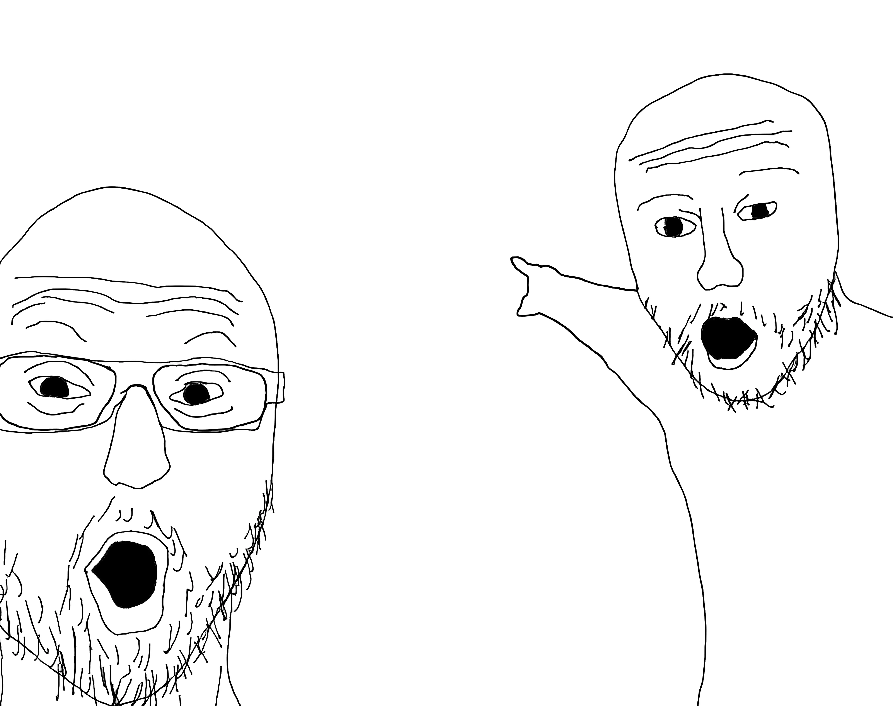

reverse curse tabnabbing technique
that was an absolute link whereas having a protocol and domain expansion
and that was an relative link whereas linking you to another page from this site. Thus, making this a website from a webpage
scroll down for more
yes i laughed to this meme even it have no context
added smol version